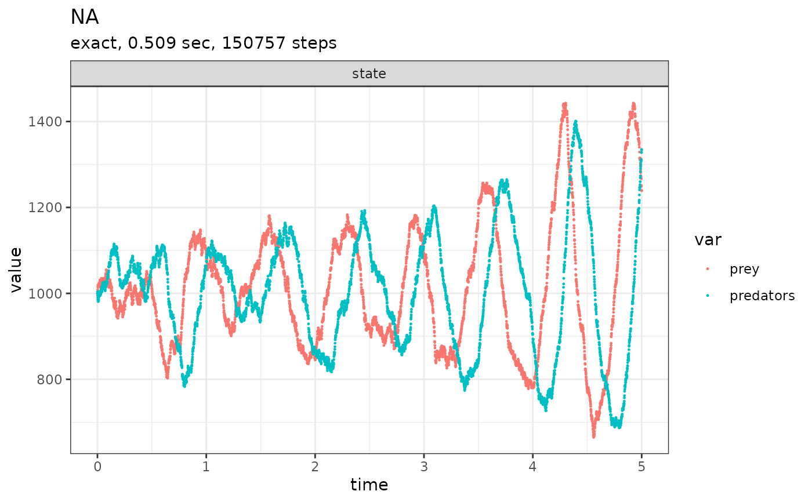

By precompiling the reactions, you can run multiple SSA simulations repeatedly without having to recompile the reactions every time.
Usage
compile_reactions(
reactions,
state_ids,
params,
buffer_ids = NULL,
hardcode_params = FALSE,
fun_by = 10000L,
debug = FALSE
)Arguments
- reactions
'reaction' A list of multiple
reaction()objects.- state_ids
[character]The names of the states in the correct order.- params
[named numeric]Constants that are used in the propensity functions.- buffer_ids
[character]The order of any buffer calculations that are made as part of the propensity functions.- hardcode_params
[logical]Whether or not to hardcode the values ofparamsin the compilation of the propensity functions. Setting this toTRUEwill result in a minor sacrifice in accuracy for a minor increase in performance.- fun_by
[integer]Combine this number of propensity functions into one function.- debug
[logical]Whether to print the resulting C++ code before compiling.
Value
A list of objects solely to be used by ssa().
x[["state_change"]]: A sparse matrix of reaction effects.x[["reaction_ids"]]: The names of the reactions.x[["buffer_ids"]]: A set of buffer variables found in the propensity functions.x[["buffer_size"]]: The minimum size of the buffer required.x[["function_pointers"]]: A list of compiled propensity functions.x[["hardcode_params"]]: Whether the parameters were hard coded into the source code.`
Examples
# \donttest{
initial_state <- c(prey = 1000, predators = 1000)
params <- c(c1 = 10, c2 = 0.01, c3 = 10)
reactions <- list(
# propensity function effects name for reaction
reaction(~c1 * prey, c(prey = +1), "prey_up"),
reaction(~c2 * prey * predators, c(prey = -1, predators = +1), "predation"),
reaction(~c3 * predators, c(predators = -1), "pred_down")
)
compiled_reactions <- compile_reactions(
reactions = reactions,
state_ids = names(initial_state),
params = params
)
out <-
ssa(
initial_state = initial_state,
reactions = compiled_reactions,
params = params,
method = ssa_exact(),
final_time = 5,
census_interval = .001,
verbose = TRUE
)
#> Running SSA exact with console output every 1 seconds
#> walltime: 0, sim_time: 0
#> SSA finished!
plot_ssa(out)
#> Loading required namespace: ggplot2

# }